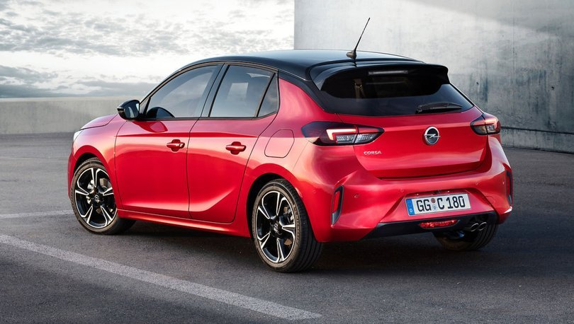
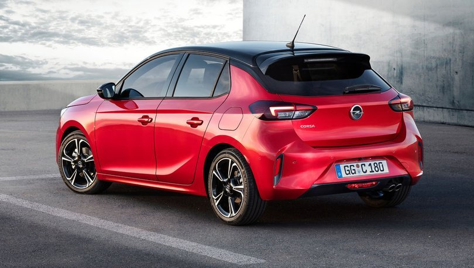

Opel Corsa, GM'nin Avrupa'daki markası Opel tarafından tasarlanan, geliştirilen ve pazarlanan B segmenti otomobildir. İlk olarak 1982'de Corsa A satışa sunulmuştur. 1993'te Corsa B satışa sunulup 1996'da hafif bir makyaj görmüştür. 2000'de Corsa C satışa sunulmuş, 2004 yılında makyajlanmıştır. 2007'de Corsa D satışa sunulmuştur ve 2011 yılında makyaj görmüştür. Daha güçlü motor seçenekleriyle birlikte Opel Astra ve Opel Insignia tarzı güncellenmiş ön tasarıma kavuşmuştur. 2011 model makyajlı Corsa, 1.2 70 HP, 1.4 100 HP, 1.3 95 HP CDTI (Common-rail Direct Turbo Injection) motor seçeneklerinin yanında 5 ileri Easytronic şanzıman opsiyonu ile 2014 yılına kadar satış bandında kalmıştır.
2014 yılında iç ve dış tasarımında belirgin değişiklikler yapılmış ve 8 Temmuz 2014'te Paris Otomobil Fuarı'nda tanıtılmıştır. Yenilenen Corsa, güncel Opel modellerine göre güncellenmiş, yeni güvenlik ekipmanları ve teknolojilerle donatılmıştır. 2019 Yılı sonunda ise PSA platformunda geliştirilmiş Opel Corsa F tanıtılmıştır.
Güvenlik
Opel Corsa, 1997 yılında 2 yıldız, 2000 yılında 3 yıldız, 2002 yılında 4 yıldız, 2006 yılında eski değerlendirme kriterlerine göre 5 yıldız ve 2014 yılında yeni değerlendirme kriterlerine göre 4 yıldız almıştır. %79 yetişkin, %77 çocuk, %71 yaya ve %56 güvenlik yardımcısı 2014 yılı makyajlı Corsa'nın yüzde oranlarıdır. Trafik İşaret Tespit Sistemi, Kör Nokta Uyarı Sistemi, Takip Mesafesi Göstergesi, Yokuş Kalkış Destek Sistemi, Ön Çarpışma İkazı ve Uzun Far Asistanı başlıca güvenlik sistemlerindendir.